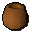
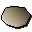

Pitta dough
| Config name | uncooked_pitta_bread |
| Item id | 1863 |
| Value | 4 gp |
| Weight | 120g |
| Members | Yes |
| Tradeable | Yes |
| Stackable | No |
| Defined in | scripts/skill_cooking/configs/cooking_inv/configs/dough/dough.obj |
Pitta dough
I need to cook this.
How to make
| Skill | Level | XP | Ingredients | Tool | How | Where | Makes |
|---|---|---|---|---|---|---|---|
| Cooking | 1 | chat menu Bread dough. / Pastry dough. / Pizza dough. / Pitta dough. | 1 gives back  Pot; members; water: any of bowl_water, bucket_water, jug_water, water_skin1, water_skin2, water_skin3, water_skin4 |
Used to make
| Skill | Level | XP | Ingredients | Tool | How | Where | Makes |
|---|---|---|---|---|---|---|---|
| Cooking | 58 | 40.0 | Pitta dough | use on object | range |  Pitta breadcan spoil into Burnt pitta bread; range only: You need a proper oven to cook that. |
Referenced in scripts
scripts/skill_cooking/scripts/cooking_inv/scripts/dough/dough.rs2